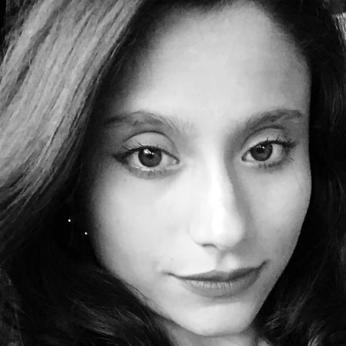

I
About
A Journey of Transformation, Curiosity & Ambition

I was once the quiet girl who struggled to make friends, even well into primary school. Introverted by nature, I gradually transformed into an impulsive, rebellious teenager who often found herself caught between youthful curiosity, family disagreements, and an overwhelming desire to experience life on her own terms.
For a long time, I lived without much consideration for the future. I enjoyed my childhood, embraced my freedom, and relied on the financial stability my parents had worked hard to provide. Eventually, I moved to a boarding school, where I continued navigating life with little understanding of the responsibilities that awaited me.
Then came COVID-19, and with it, an unexpected turning point. My father's financial circumstances changed dramatically, and the stability I had always taken for granted was no longer certain. Being the eldest child, I began to understand that life was no longer simply about enjoying the present. Responsibility became inevitable, and ambition slowly replaced carelessness.
I returned to live with my parents, continued my education, and started approaching life with a completely different mindset. Somewhere along that journey, I discovered the world of technology.
It was an entirely new universe — one far greater, more complex, and more fascinating than anything I had previously imagined. I began with graphic design, progressed into UI/UX design, explored web development, and eventually immersed myself in the rapidly evolving world of artificial intelligence.
Every new discipline opened another door. Every challenge introduced another possibility. I discovered that I genuinely loved creating things, understanding how technology works, and transforming abstract ideas into tangible experiences.
I was still the same curious, chaotic, occasionally overthinking girl, but I was gradually becoming someone with direction.
My journey took another unexpected turn while I was studying in China. Discovering that I was pregnant changed my perception of life in ways I could never have anticipated. It was a transformation I had never planned for, yet motherhood gave my ambitions an entirely new meaning.
Today, I approach my work with a different kind of determination. I am no longer learning simply because I am curious; I am building because I have a purpose beyond myself. My child has become one of my greatest motivations, inspiring me to create opportunities, pursue excellence, and work towards providing a life filled with comfort, opportunity, and privilege.
I genuinely enjoy what I do. Learning something new, developing an idea, experimenting with technology, and building something from nothing have become integral parts of my everyday life. I do not consider myself someone who has reached the destination. I am still evolving, still exploring, and still discovering what I am capable of achieving.
My professional journey has also introduced me to people and opportunities across international markets, including Bangladesh, Canada, China, and Africa. Collaborating across different environments has broadened my perspective and strengthened my desire to establish meaningful professional relationships with companies around the world. I am currently expanding this journey through my collaboration with a professional based in Wales, United Kingdom.
I believe my story is not about becoming a completely different person. It is about discovering what I was capable of becoming.
From an introverted little girl to a mother, creative thinker, technology enthusiast, and aspiring global professional, my journey continues to evolve.
I have ambitions beyond borders, ideas beyond limitations, and an endless appetite for learning.
And perhaps the most exciting part is that I am only getting started.
My Reason to Live.
My Reason to Build.
Aishi this message for you my baby
Mamma loves you more than words can ever express. You changed my world in an instant and gave my life a whole new purpose.
v. I